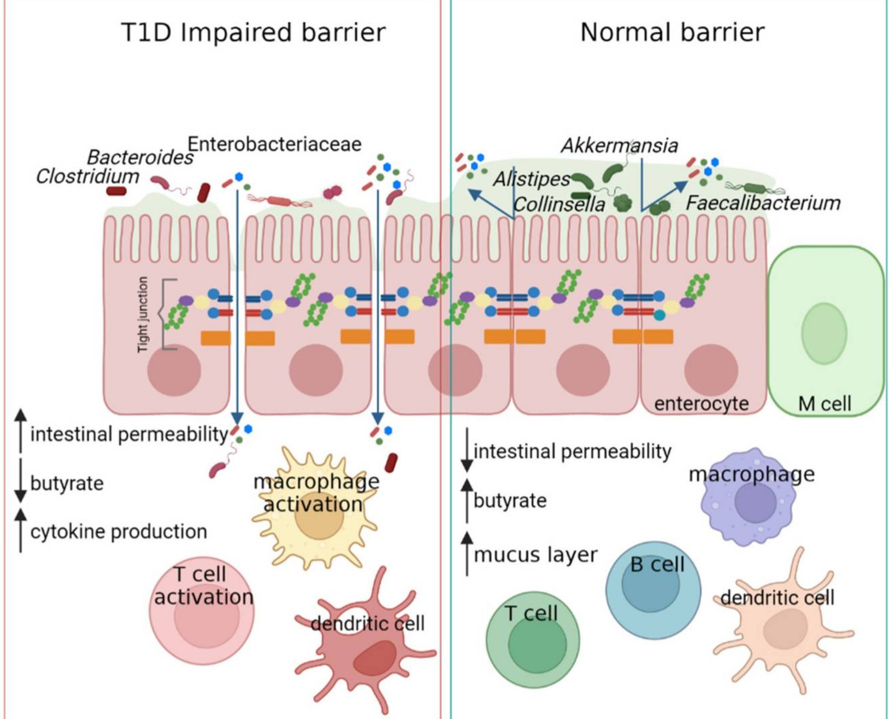
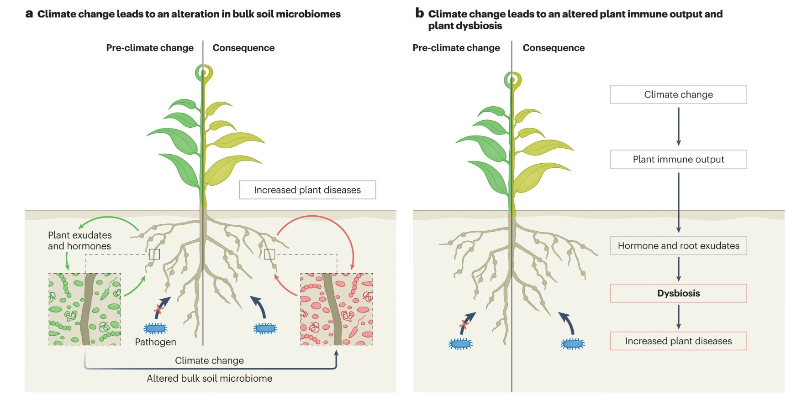
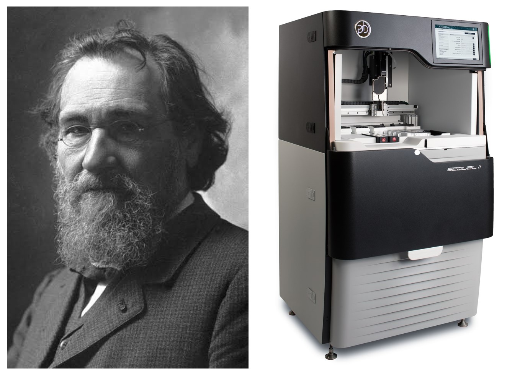

This is part 1 in a series. You can read part 2 here.
Humans co-evolved together with our microbiomes, the bacteria and fungi that colonize our intestines, coat our skin, and inhabit our mouths, throats, and numerous other body locations. Microbiomes are significant because they influence how we process nutrients, fight pathogens, and what diseases we are susceptible to. This is not just true of humans, but plants and insects also have microbiomes that influence their metabolism and immune systems.
A microbiome is the community of microorganisms found living together in a given habitat– this does not just include living on a host. Scientists study the microbiomes of nanoplastics floating in the ocean, covered in bacteria and fungi, and of the tiny microbes throughout the atmosphere that catalyze precipitation. Even wildfire smoke has a microbiome. These environmental microbiomes influence food chains, weather patterns, and the spread of disease. We can’t fully understand the impacts of pollution and climate change without studying them.
Studying the microbiome is crucial for better understanding the health and disease of humans, other animals, plants, and our environment. In this 2-part series, I will cover a grab bag of surprising and fascinating facts about the microbiome.
When the immune system attacks friendly bacteria…
Commensal bacteria, often referred to as “friendly”, are bacteria that live on human skin or in the gut and help us. The human gut microbiome can help synthesize vitamins we need, regulate dopamine, and protect us from infection. However, so-called friendly bacteria can cause grave problems when they cross out of the gut into the bloodstream. Microbes can’t necessarily be classified as “good” or “bad”, and this impact of what happens when microbes cross from the gut to the blood is an example of this.
I created a short 5 minute video to explain these ideas, geared for a general audience:
If “friendly” microbes stray into the bloodstream, our immune system may mount an attack against them by producing antibodies and activating T cells (the two primary approaches of our adaptive immune systems). The small regions on a bacteria recognized by T cells or antibodies are known as epitopes. All bacteria have many epitopes, and genetics helps determine which particular epitopes your immune system is able to recognize. Two different people will likely produce T cells recognizing different epitopes for the same bacteria.

If the epitopes our immune system attacks are too similar to regions on our own cells, autoimmune disease can develop. This means that the friendly bacteria that has leaked into the bloodstream (where it does not belong) “looks” too similar to some of your own cells. For instance, if the bacteria “looks” like your pancreatic cells (which produce insulin), your T cells may begin mistakenly attacking these insulin-producing cells, leading to Type 1 Diabetes.
The microbiome can also play a role in how likely microbes are to leak out of a person’s gut in the first place! Low levels of certain commensal bacteria increases gut permeability. This heightened permeability allowing the microbes to leave the intestines. This process has been linked to progression of Type 1 Diabetes to more advanced stages. Note that commensal bacteria are just one potential trigger for the development of autoimmune diseases. As I discussed in a previous post, viral infections can also trigger Type 1 Diabetes and other autoimmune diseases.
Bacteria travel on fungal highways in the plant microbiome
Plants also have microbiomes. One component of the plant microbiome are fungi that surround the plant roots and the bacteria that travel along these “fungal highways.” The fungi exude sugars that the bacteria use as an energy source along their journeys. The bacteria are able to mineralize organic phosphate, which is beneficial to the fungus and to the plant. Together, the fungus, plant, and bacteria are in symbiotic relationships.
Watch this short 90 second video to see bacteria traveling along a fungal highway in real-time. You won’t believe how fast they are!

For more on fungal highways, here is a 3 minute Science Fridays video which discusess how fungal networks optimize traffic to avoid traffic jams. It’s created by Christian Baker, who does a great job of explaining science in a succinct and engaging way. In this video, he interviews math professor Dr. Marcus Roper of UCLA who studies the fluid dynamics of bacterial travel.
Other researchers are looking at the use of fungal highways to allow pollutant-degrading bacteria to travel, which could help remove pollutants in a broader area as part of bioremediation efforts.
Plant microbiomes have a strong influence on their immune function. They help prevent the colonization and growth of pathogens. Unfortunately, climate change is altering the microbiomes of plants, which can make them more susceptible to disease. There are several mechanisms by which this can happen. Climate change alters the composition of microbes found in soil, which is the first line of defense for plants against pathogens. Plants release chemicals and metabolites into the soil, which are useful for attracting beneficial microbiomes, and climate change can harm plants’ capacity to do this (at least in the same quantities as before). Both plants and microbes may migrate into new areas due to changes in climate, further disrupting previous equilibriums.

Study of the microbiome is both old and very new
My microbiome course began with an in-depth unit covering different methods for sequencing genomes. There have been multiple revolutions in gene sequencing technology in recent decades, and new machines for gene sequencing are released regularly. Our growing understanding of the microbiome would not be possible without this technology to sequence numerous bacterial species in a sample, and in many ways the field is very young, with lots of open questions remaining.
Even though microbiome research has only taken off in the last 20 years with the advent of new sequencing technologies, ideas about the microbiome and its role in health have been around for a long time. Antonie van Leewenhoek used a microscope to compare the microbes in his oral and fecal microbiota in the 1680s.

Élie Metchnikoff, who won the Nobel Prize in Medicine 1908, is best known as the father of cellular immunity. He discovered that there are immune cells that can ingest pathogens. He named them “eating cells” (phagocytes), and we now refer to these immune cells as “big eaters” (macrophages). In addition to discovering cellular immunity, Metchnikoff is considered one of the founders of probiotics. He believed consuming sour milk (yogurt) would be beneficial for the microbiome and he laid the conceptual framework for fecal transplantation to modify the microbiome, over 100 years ago. Questions about whether and how we can alter our microbiomes are still being studied and debated today, as are the roles of genetics, lifestyle, and environment in influencing the microbiome.
Stay tuned…
Please subscribe to my blog to be notified of Part 2, which will describe the microbiomes of nanoplastics and wildfire smoke, as well as some puzzling examples of microbes that are both good and bad.
In the meantime, you may be interested in a previous post of mine that discussed the microbiomes of insects, which can help produce both essential nutrients and defensive toxins to use against predators. Read more in 4 Things I Learned About Bugs.
Submit your email below to be notified of new posts:
I look forward to reading your responses. Create a free GitHub account to comment below.